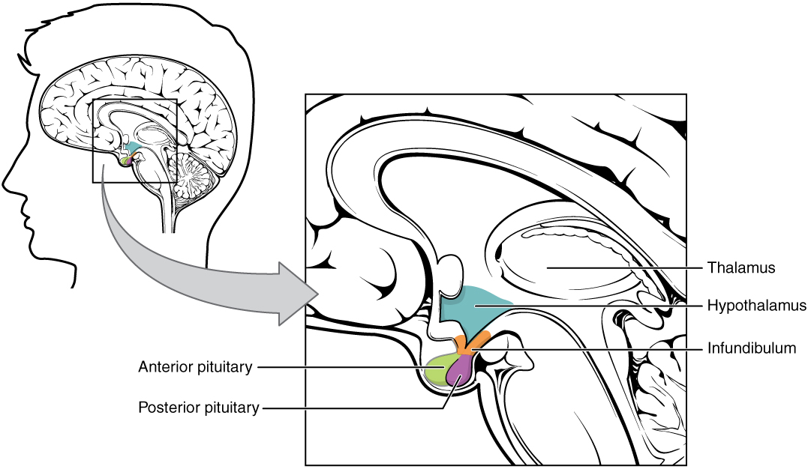
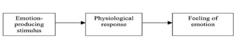
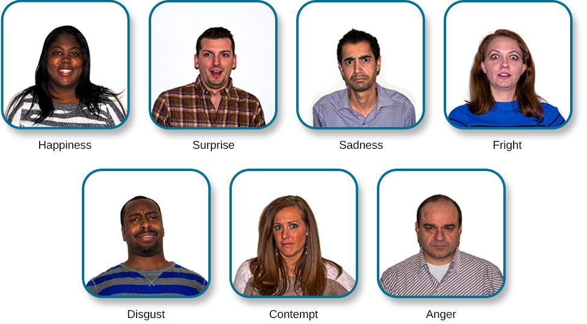

Motivation & Emotion
Why did you get out of bed this morning, and why did your stomach turn when you remembered the deadline? Those two questions — what pushes us to act, and what we feel while acting — are the twin subjects of this chapter. Motivation is the set of forces that energize and direct behavior toward a goal; emotion is the brief, whole-body reaction that colors experience and readies us to respond. The two are deeply entwined: hunger drives you to the kitchen, fear drives you from the alley, and the feeling is often the very thing that gets the body moving. This chapter traces how psychologists have tried to explain both — from raw instinct to Maslow's pyramid, from a growling stomach to the amygdala's split-second alarm.
By the end of this chapter you can
- Define motivation and compare the instinct, drive-reduction, and arousal theories.
- Place needs in Maslow's hierarchy and explain the idea of prepotency.
- Describe how the hypothalamus and the hormones ghrelin and leptin regulate hunger and eating.
- Contrast the James-Lange, Cannon-Bard, and Schachter-Singer theories of emotion.
- Summarize the evidence that some facial expressions of emotion are universal, and define display rules.
- Identify the role of the limbic system, especially the amygdala, in emotion.
- Explain how autonomic arousal prepares the body during strong emotion.
Section 1Theories of motivation

From instinct to drive
Motivation is the wanting behind the doing — the internal state that gives behavior its energy and its direction. The earliest scientific account, instinct theory, held that much of what we do is built in. Drawing on Darwin, psychologists such as William James and William McDougall argued that humans, like animals, are equipped with unlearned, species-wide behavior patterns — instincts — that automatically drive action. The theory collapsed under its own success: naming an instinct for every behavior (a "curiosity instinct," a "parental instinct") explained nothing, because the label simply restated the behavior it was meant to account for. True instincts — fixed, complex, unlearned patterns like a bird's nest-building — turned out to be rare in humans.
The next account looked to the body's need for balance. Drive-reduction theory, developed by Clark Hull, begins with homeostasis — the tendency to maintain a steady internal state. A physiological need (for food, water, warmth) creates an aroused tension state called a drive, and behavior is motivated to reduce that drive and restore balance. Thirst pushes you to drink; drinking cuts the drive; the push subsides. Primary drives are unlearned and biological (hunger, thirst); secondary drives, like the pull toward money, are learned through their association with primary rewards.
Arousal, incentives, and the optimal level
Drive reduction has an obvious hole: people often work to increase arousal, not lower it. We ride roller coasters, watch horror films, and take on hard puzzles for no biological need at all. Arousal theory fixes this by proposing that we are motivated to reach an optimal level of stimulation — too little and we seek excitement, too much and we seek calm. The classic finding here is the Yerkes-Dodson law (from Robert Yerkes and John Dodson, 1908): performance is best at a moderate level of arousal, and the ideal level is lower for hard tasks than for easy ones. A little pre-exam adrenaline sharpens you; a lot of it makes you go blank. Alongside these push forces, incentive theory adds the pull of external goals — we are drawn toward rewards (a paycheck, praise) and away from punishments, whether or not any internal need is involved.
| Theory | Core idea | Best explains | Weakness |
|---|---|---|---|
| Instinct | Behavior is driven by innate, species-wide patterns | Fixed, unlearned behaviors | Naming an instinct doesn't explain it |
| Drive-reduction | Needs create drives; we act to restore homeostasis | Hunger, thirst, temperature | Can't explain seeking arousal |
| Arousal | We seek an optimal level of stimulation | Curiosity, thrill-seeking, boredom | Less useful for basic drives |
| Incentive | We are pulled by external rewards | Working for pay, grades, praise | Downplays internal states |
Maslow's hierarchy of needs
Abraham Maslow (1943) proposed that our many motives are not all equal but stacked in a hierarchy of needs, usually drawn as a pyramid. At the base sit physiological needs (food, water, sleep); above them, safety needs (security, shelter); then needs for love and belonging; then esteem (achievement, respect); and at the peak, self-actualization — the drive to become one's fullest self. The key claim is prepotency: lower needs generally must be reasonably met before higher ones dominate. A starving person is not much moved by concerns about self-esteem. Maslow later added self-transcendence above self-actualization. The hierarchy is intuitive and enduringly popular, though critics note that the ordering is not rigid — people sacrifice food and safety for love or ideals, and cultures differ in which needs they prize.
- Motivation energizes and directs behavior; early instinct theory failed because labeling a behavior an instinct explains nothing.
- Drive-reduction theory (Hull): needs create drives that we act to reduce, restoring homeostasis.
- Arousal theory and the Yerkes-Dodson law explain why we sometimes seek stimulation, with performance peaking at moderate arousal.
- Maslow's hierarchy stacks needs from physiological to self-actualization, with lower needs generally taking priority (prepotency).
Section 2Hunger & eating

The body's hunger signals
Where does hunger come from? An early guess pointed at the stomach. In 1912 Walter Cannon and his student A. L. Washburn had Washburn swallow a balloon so his stomach contractions could be recorded; the contractions did line up with reported pangs. But the stomach turned out to be a messenger, not the master — people whose stomachs have been surgically removed still feel hunger. The real control center is the hypothalamus, a small structure at the base of the brain that monitors the body's fuel and orchestrates eating. Two regions became famous from lesion studies: the lateral hypothalamus acts like an "on" switch — stimulate it and an animal eats, destroy it and the animal starves — while the ventromedial hypothalamus acts like an "off" switch, or satiety center — destroy it and the animal overeats dramatically. Modern work refines this picture with the arcuate nucleus and its appetite-stimulating and appetite-suppressing neurons, but the on/off logic remains a useful map.
The chemistry of appetite
The hypothalamus listens to a stream of chemical signals. Glucose (blood sugar) is a key one: when it falls, hunger rises. Hormones fine-tune the message. Ghrelin, released by an empty stomach, is the "I'm hungry" hormone — it climbs before meals and drops after eating. Leptin, secreted by fat cells, is a longer-term "I'm full / I have enough stored" signal that suppresses appetite; insulin and the gut hormone PYY also promote satiety. Many researchers describe a set point — a weight the body defends by adjusting hunger and basal metabolic rate (the calories burned at rest). Eat too little and metabolism slows to protect the store, one reason strict diets are so easily undone. Because the store is defended, a settling point shaped by environment and habit often describes real weight better than a single fixed value.
| Signal | Source | Effect on eating |
|---|---|---|
| Ghrelin | Empty stomach | Stimulates hunger (rises before meals) |
| Leptin | Fat cells | Suppresses hunger (signals stored energy) |
| Insulin | Pancreas | Promotes satiety; regulates glucose |
| Low blood glucose | Bloodstream | Triggers hunger |
| Lateral hypothalamus | Brain | "On" switch — drives eating |
| Ventromedial hypothalamus | Brain | "Off" switch — signals fullness |
Psychology and culture at the table
Biology sets the drive, but psychology decides much of the menu. Taste preferences are partly learned — we are born liking sweet and disliking bitter, but everything from cilantro to chili heat is acquired through exposure and culture. External cues matter enormously: larger plates, variety, and the simple presence of others lead people to eat more, often without noticing (a bias toward finishing the unit in front of us). When these systems go badly wrong, the result can be an eating disorder — anorexia nervosa (self-starvation and a distorted body image), bulimia nervosa (binge-and-purge cycles), or binge-eating disorder (recurrent binges without purging). These are serious psychiatric conditions with biological, psychological, and cultural roots, not mere matters of willpower.
- The hypothalamus is the master regulator: the lateral region switches eating on, the ventromedial region signals fullness.
- Ghrelin (from the stomach) stimulates hunger; leptin (from fat cells) suppresses it; falling glucose triggers eating.
- The set point and basal metabolic rate help the body defend a weight, which frustrates dieting.
- Learned tastes, portion cues, and culture strongly shape what and how much we eat.
Section 3Theories of emotion

What an emotion is made of
An emotion is a brief, coordinated response with three ingredients: a physiological component (racing heart, sweaty palms), an expressive/behavioral component (a scowl, a flinch), and a subjective/cognitive component (the conscious feeling and how we interpret it). The great theories of emotion disagree not about the ingredients but about their order: which comes first, the bodily reaction or the feeling — and does thinking have to happen in between?
Three classic accounts
The James-Lange theory (from William James and the Danish physiologist Carl Lange) makes the counterintuitive claim that the body comes first: an event triggers a physiological reaction, and the emotion is our perception of that reaction. In James's phrasing, we do not tremble because we are afraid — we feel afraid because we tremble. Emotion is the readout of the body.
The Cannon-Bard theory (Walter Cannon and Philip Bard) objected. Bodily changes are too slow and too similar across emotions to be their source, they argued: a pounding heart accompanies fear, anger, and excitement alike, so the body alone can't tell you which you feel. Instead, they proposed, a stimulus is routed by the thalamus simultaneously to the cortex (producing the conscious emotion) and to the body (producing the arousal). Feeling and physiology happen at the same time, independently.
The Schachter-Singer two-factor theory (Stanley Schachter and Jerome Singer, 1962) added the missing ingredient: thought. Emotion, they said, requires two factors — general physiological arousal plus a cognitive label we attach to it by reading the situation. In their famous study, participants injected with epinephrine (adrenaline) felt the same arousal but reported it as anger or euphoria depending on the confederate they were placed with. The arousal is generic; context tells you what emotion it is.
| Theory | Sequence | Signature claim |
|---|---|---|
| James-Lange | Stimulus → bodily arousal → emotion | The emotion is the perception of the body's response |
| Cannon-Bard | Stimulus → arousal and emotion at once | Feeling and physiology occur simultaneously and independently |
| Schachter-Singer | Stimulus → arousal + cognitive label → emotion | Emotion = arousal interpreted through context |
Later theorists refined the role of thought. Richard Lazarus argued that emotion always begins with an appraisal — a quick judgment of whether an event is good or bad for us — even if we're not aware of it. Robert Zajonc and the neuroscientist Joseph LeDoux countered that some emotional reactions, especially fear, can fire before any conscious thinking, via fast brain pathways that bypass the cortex — a bridge to the biology in Section 5.
- Emotion has three parts: physiological arousal, expressive behavior, and subjective feeling.
- James-Lange: body first — the feeling follows the physical reaction.
- Cannon-Bard: arousal and emotion occur simultaneously and independently.
- Schachter-Singer: emotion needs arousal plus a cognitive label supplied by the situation.
Section 4Expressing emotion

Faces the whole world reads
Long before the word "emotion" meant anything scientific, Charles Darwin made a bold claim in The Expression of the Emotions in Man and Animals (1872): emotional expressions are inherited, adaptive, and shared across humanity. A century later, Paul Ekman and Wallace Friesen gathered the evidence. Showing photographs of faces to people around the globe, they found that a small set of basic emotions — happiness, sadness, anger, fear, surprise, and disgust (Ekman later added contempt) — were recognized at rates far above chance in every culture tested. Crucially, they studied the Fore people of Papua New Guinea, an isolated group with almost no exposure to Western media, who nonetheless matched the same expressions to the same situations. Congenitally blind children, who have never seen a smile, still smile when happy and grimace when frustrated — another sign that the expressions are built in, not merely copied.
Does the face feed the feeling?
Expressions may not just show emotion — they may shape it. The facial feedback hypothesis proposes that the act of making a facial expression sends signals back to the brain that intensify or even generate the matching emotion. In a well-known study, people who held a pen crosswise in their teeth (forcing a smile-like posture) rated cartoons as funnier than people who held it with their lips (blocking a smile). The effect is modest and has been debated in large replication efforts, but the broader principle — that bodily posture and expression loop back into feeling — fits the James-Lange spirit from Section 3.
When culture edits the face
If the raw expressions are universal, why do emotional lives look so different around the world? The answer is display rules — culturally learned norms about which emotions may be shown, to whom, and how strongly. Ekman and Friesen demonstrated them elegantly: American and Japanese students watched a stressful film alone and showed nearly identical disgust; but when an authority figure was present, the Japanese students masked their disgust with polite smiles far more than the Americans did. The underlying expression was the same; the rules for displaying it differed. Display rules also vary by setting and social role — and much emotional signaling rides on gestures and body language that, unlike the basic faces, carry very different meanings from one culture to the next.
| Basic emotion | Hallmark facial cue |
|---|---|
| Happiness | Raised cheeks, smiling mouth, crow's-feet at the eyes |
| Sadness | Downturned mouth, raised inner brows |
| Anger | Lowered, drawn-together brows; tightened lips |
| Fear | Wide eyes, raised brows, stretched lips |
| Surprise | Raised brows, widened eyes, dropped jaw |
| Disgust | Wrinkled nose, raised upper lip |
- Darwin proposed that expressions are innate; Ekman and Friesen showed a set of basic emotions is recognized across cultures.
- Evidence for universality includes the isolated Fore of New Guinea and the expressions of congenitally blind children.
- The facial feedback hypothesis holds that making an expression can influence the emotion felt.
- Display rules are cultural norms that govern how and when emotions are shown.
Section 5The biology of emotion

The emotional brain
Emotion lives largely in the limbic system, a ring of structures curled beneath the cortex: the hypothalamus (the same hunger regulator, here driving bodily arousal), the hippocampus (which files emotional memories), the thalamus (the sensory relay), and above all the amygdala. The amygdala is the brain's threat detector — a pair of almond-shaped clusters that evaluate incoming signals for danger and trigger fear and aggression. Damage to it can abolish normal fear: monkeys with amygdala lesions (the Klüver-Bucy syndrome) approach objects they would ordinarily flee, and people with amygdala damage struggle to recognize fear in others' faces.
Two roads to fear
The neuroscientist Joseph LeDoux traced two pathways by which a frightening stimulus reaches the amygdala. The low road runs straight from the thalamus to the amygdala — fast, crude, and unconscious — letting you jump back from a snake-shaped stick before you know what it is. The high road travels from the thalamus up to the cortex for careful analysis and then down to the amygdala — slower but accurate, letting you realize it was only a stick. The low road is why emotion can outrun thought, exactly the point Zajonc and LeDoux raised against pure appraisal theories in Section 3. Meanwhile the prefrontal cortex regulates and interprets these signals, and the insula is especially active in disgust.
| Structure | Role in emotion |
|---|---|
| Amygdala | Detects threat; central to fear and aggression |
| Hypothalamus | Triggers bodily (autonomic) arousal |
| Hippocampus | Forms and retrieves emotional memories |
| Thalamus | Relays sensory input to cortex and amygdala |
| Prefrontal cortex | Interprets and regulates emotional responses |
| Insula | Prominent in disgust and bodily awareness |
Arousal and the body's alarm
When the amygdala sounds an alarm, it recruits the autonomic nervous system. The sympathetic branch mounts the fight-or-flight response: the adrenal glands flood the blood with epinephrine (adrenaline) and cortisol, the heart races, pupils dilate, breathing quickens, and digestion halts — the body primed for action. Once the threat passes, the parasympathetic branch restores calm, slowing the heart and resuming digestion. This is arousal in the physiological sense that Cannon-Bard and Schachter-Singer both invoked. It also explains the limits of the polygraph, or "lie detector": it measures autonomic arousal (heart rate, sweating, breathing), but arousal accompanies many emotions, so an innocent but anxious person and a calm liar can both fool it. Different emotions do share a great deal of physiology — which is exactly why context and cognition, from Section 3, do so much of the work of telling them apart.
- The limbic system — amygdala, hypothalamus, hippocampus, thalamus — is the emotional core of the brain.
- The amygdala detects threat and drives fear; damage to it blunts fear (Klüver-Bucy syndrome).
- LeDoux's fast low road lets emotion precede conscious thought; the high road adds cortical analysis.
- Sympathetic arousal (epinephrine, racing heart) prepares fight-or-flight; the parasympathetic branch restores calm.
The chapter in one breath
- Motivation energizes and directs behavior; theories run from instinct to drive-reduction (homeostasis) to arousal (optimal stimulation) to incentives.
- Maslow's hierarchy stacks needs from physiological to self-actualization, with lower needs usually taking priority.
- Hunger is governed by the hypothalamus and by hormones — ghrelin stimulates, leptin suppresses — while learning and culture shape what we eat.
- An emotion blends arousal, expression, and feeling; James-Lange, Cannon-Bard, and Schachter-Singer disagree about their order.
- Basic facial expressions are recognized across cultures (Ekman), but display rules govern how they are shown.
- The limbic system — especially the amygdala — runs emotion, with a fast pathway that beats conscious thought.
- Sympathetic arousal (epinephrine, fight-or-flight) is the shared bodily engine of strong emotion.
ReferenceWords worth knowing
A quick reference for the terms in this chapter — skim it now, or circle back whenever a word trips you up.
- Amygdala
- An almond-shaped limbic structure that detects threat and is central to fear and aggression.
- Arousal theory
- The view that we are motivated to reach an optimal level of stimulation, neither too high nor too low.
- Basic emotions
- A small set of emotions (happiness, sadness, anger, fear, surprise, disgust) whose facial expressions are recognized across cultures.
- Cannon-Bard theory
- The theory that physiological arousal and the conscious emotion occur simultaneously and independently.
- Display rules
- Culturally learned norms governing which emotions may be shown, to whom, and how strongly.
- Drive-reduction theory
- The idea that a physiological need creates a drive that motivates behavior to restore homeostasis.
- Emotion
- A brief, whole-body response with physiological, expressive, and subjective components.
- Facial feedback hypothesis
- The proposal that making a facial expression can influence the emotion a person feels.
- Ghrelin
- A hormone released by an empty stomach that stimulates hunger.
- Hierarchy of needs
- Maslow's ranking of needs from physiological at the base to self-actualization at the peak.
- Homeostasis
- The body's tendency to maintain a stable, balanced internal state.
- Instinct theory
- The early view that behavior is driven by innate, species-wide patterns; discredited because naming an instinct does not explain the behavior.
- James-Lange theory
- The theory that emotion is our perception of a bodily response — the body reacts first, and the feeling follows.
- Lateral hypothalamus
- The hypothalamic region that acts as an "on" switch for eating.
- Leptin
- A hormone secreted by fat cells that signals stored energy and suppresses appetite.
- Limbic system
- A group of brain structures (amygdala, hippocampus, hypothalamus, thalamus) central to emotion and motivation.
- Motivation
- The internal forces that energize and direct behavior toward a goal.
- Schachter-Singer theory
- The two-factor theory that emotion arises from physiological arousal plus a cognitive label drawn from the situation.
- Self-actualization
- The need to fulfill one's potential; the peak of Maslow's hierarchy.
- Set point
- The weight the body tends to defend by adjusting hunger and metabolic rate.
- Sympathetic nervous system
- The autonomic branch that mobilizes the fight-or-flight response during arousal.
- Ventromedial hypothalamus
- The hypothalamic region that signals satiety, acting as an "off" switch for eating.
- Yerkes-Dodson law
- The principle that performance is best at a moderate level of arousal, and lower for harder tasks.